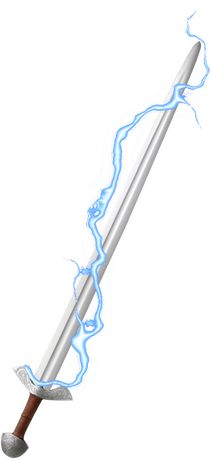

Robin's Playstyle
When playing a magus, the main goal is to Spellstrike as often as you can, capitalizing on enemy weaknesses whenever possible. Ideally, you should be able to look at a fight and know in advance whether entering Arcane Cascade will be necessary, and if you’ll need to recharge Spellstrike multiple times. Generally, if you think the fight will last more than three or four rounds, or if there are enemies with a weakness you can exploit, enter Arcane Cascade. Otherwise, it’s probably not worth the action.
When I play Robin, I often start the fight by spending one action to Recall Knowledge, hoping to identify enemy vulnerabilities or abilities I should be concerned about. After that, I either move into range and attack, or cast a spell. In the lucky chance that I’m already in range, that spell can be a Spellstrike. On the next turn, I enter Arcane Cascade and then either move and use Shielding Strike or attempt a Magus’s Analysis and then either strike or raise his shield.
From that point on it becomes a balancing act of recharging Spellstrike (either through Magus’s Analysis, Shielding Strike, or just spending an action) and Spellstriking as often as possible. I try to aim for Spellstriking once every two rounds, or three rounds if I need to use his shield more actively. With Produce Flame, Ray of Frost, Gouging Claw, Electric Arc, Disrupt Undead, and Divine Lance, he can strike just about any weakness and add almost every damage type to his Arcane Cascade.
Fire Spellstrike
Electric Arcane Cascade